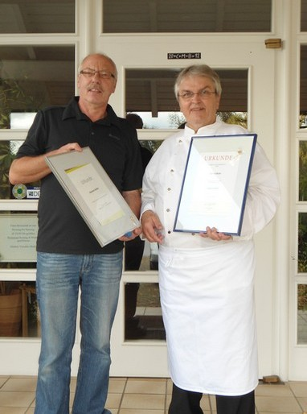
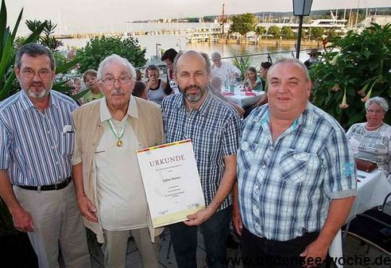
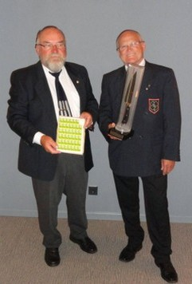
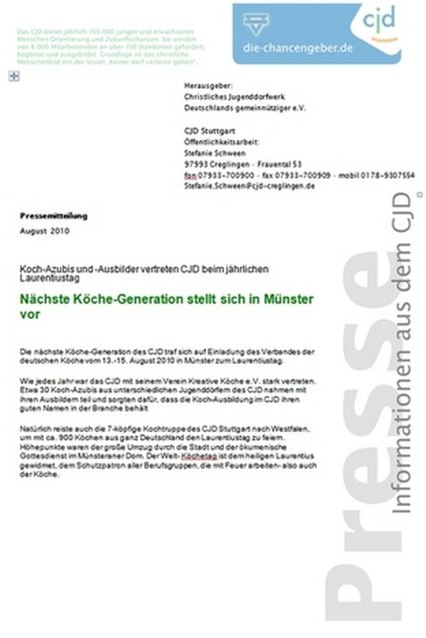

Kochclub Lörrach e.V. 1964

Für Seine Verdienste um den Berufstand des Koches und dem Verband der Köche Deutschlands wurde Manfred Mutter mit dem "Goldenen Kleeblatt" ausgezeichnet. Er war 14 Jahre lang 1.Vorsitzender des Kochclub Lörrach und prägte den Verein maßgeblich mit, gleichzeitig wurde Manfred Mutter für 40 Jahre Mitgliedschaft im Verband der Köche Deutschland geehrt.
Die Mitglieder des Zweigvereins wünschen Manfred Mutter alles Gute.
Altverdienter Küchenmeister Herbert Reiner mit Gastronomischer Medaille am Bande ausgezeichnet
25. Juli 2012 | Von Fritjof Schultz-Friese | Kategorie: ALLGEMEIN, BOULEVARD, EVENT, GASTRO-FÜHRER BODENSEE,
KONSTANZ, PROMIS
73-jähriger Konstanzer hat sich im Verband der Deutschen Köche verdient gemacht –
Ehrung beim Sommerfest des Köcheforums sowie des Köchevereins auf der Konzil-Terrasse.

Bild: Fritjof Schultz-Friese KONSTANZ. fsf / Mit der Gastronomischen Medaille an Bande sowie Urkunde wurde der 73- jährige Altgastronom Herbert Reiner aus Konstanz vom Berufsverband der Köche Deutschlands von Vizepräsident Karl-Josef Haaf auf der Konzil-Terrasse in geehrt. Die hochkarätige Auszeichnung anlässlich dem Sommerfest des Köche-forums sowie dem Köcheverein. Dem Berufsverband der Köche Deutschlands ge-hören 15.000 Köche in 150 Zweigvereinen an. In Konstanz sind es 85 Mit- glieder. Gastgeber an dem Abend war der Konzilwirt Manfred Hölzl.
Die Laudatio zur Ehrung von Altgastronom Herbert Reiner hielt Vizepräsident Karl-Josef Haaf vom Berufsverband der Köche Deutschlands. Seine Worte: „Wir ehren heute Abend Herbert Reiner, der sich für den Verband der Köche Deutschlands verdient gemacht hat. Er erhält die Gastronomische Medaille, die im Jahr nur dreimal an hochverdiente Mitglieder vergeben wird. Es ist die höchste Ehrung die der Verband vergibt. Seine Daten sind: 1958 Ausbildung zum Koch, Wanderjahre in der Gas- tronomie, Prüfung zum Küchenmeister, 25 Jahre Küchenchef in Altenzentrum Rosenau Konstanz, seit 1979 Mitglied im Verband der Köche Deutschlands, 12 Jahre erster Vorsitzender des Bodensee-Kochvereins (1985-2007), 10 Jahre Vorsitzender des Landesverbandes der Köche Baden-Würt- temberg (1992-2001), Vorsitzender des Revisionsausschusses (2006-2009 VUD), Veranstalter und Organisator des Laurentiustages VKD in Konstanz mit gut 1000 Köchen, über 20 Jahre Prü- fungsausschuss der Köche IHK-Schwarzwald- Baar- Kreis, Hochrhein-Bodensee. Der heute 73- jährige Herbert Reiner gehört zu den hochdekoriertesten Köchen in Deutschland. Dazu 1991 die Ver- dienstnadel des VKD in Gold , Goldmedaille des VKD 1998, Goldmedaille mit Lorbeer am Bande 2002.
Zum Zweigverein des Jahres im Verband der Köche Deutschlands
wurde anlässlich des Laurentiustages am festlichen Galaabend
unser Landesverbandsmitglieds-Verein Schwarzwald-Baar
für das Jahr 2011 durch den Präsidenten ausgezeichnet.
Unter 25 eingereichten Vereinen wurde der Verein Schwarzwald-Baar ausgezeichnet.
Der Vorstand beglückwünscht besonders Kollege August Guter für diesen Erfolg.
Ludwig Schreiner - August Guter

Herzlichen Glückwunsch!
Anlässlich des 40 jährigen Jubiläums des Kochverein Schwarzwald - Baar überbrachte VolkerEgen
am 15.10.2011 als Landesvorsitzender die Glückwünsche des Landesverbandes BW und des VKD.
Hierbei wurden folgende Kollegen für ihre Verdienste um den Berufsstand geehrt:
Goldene Verdienstnadel des VKD
Harald Franz und Gunter Pfefferle
Das Goldene Kleeblatt des VKD
Rolf Lohrer
Goldmedaille mit Lorbeer des VKD
August Guter
